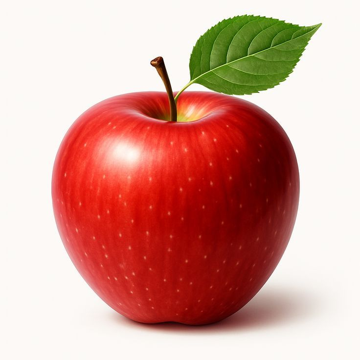
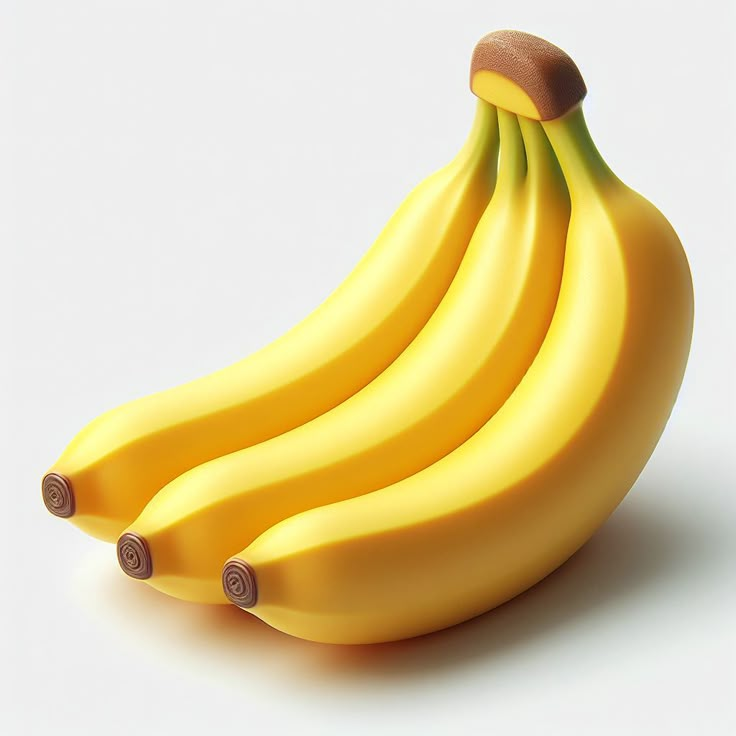
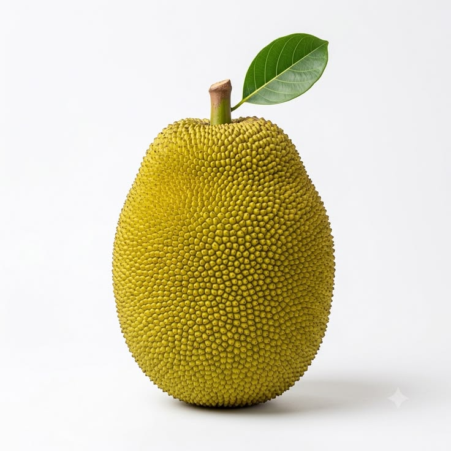

Fruits are delicious and healthy foods that are enjoyed by people all over the world.
Fruits come in different colours, shapes, sizes and tatses.
Some fruits are sweet, while others ares sour or slightly bitter.

Apple is a popular fruit that can be red, green or yellow.
Apples can be eaten fresh or used to make juice and other foods.

Health benefits and nutrition details
Banana varieties like red or blue java bananas

Packed with about 80% to 90% water.
Aids digestion and acts as a prebiotic to support gut health.

The fruit is native to mainland China, where it was historically known as the Chinese gooseberry.
Seeds were brought to New Zealand in the early 20th century, and the fruit was later renamed after the country's native flightless bird.
Tropical fruits grow well in warm areas and are popular in many countries.


Sweet - Fruits with a naturally sugary taste.
Sour - Fruits with a sharp or acidic tatse.
Tropical - Fruits that commonly grow in warm regions.
Juicy - Fruits that contain a lot of liquid.